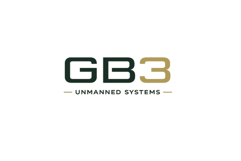

Aircraft Development
Multirotor, fixed-wing, VTOL, payload-specific platforms, and modifications to existing aircraft for mission fit.

Unmanned aircraft systems research and development
GB3 develops, integrates, and supports unmanned aircraft systems for government, research, emergency response, and field operations where commercial off-the-shelf platforms are not sufficient.
About Us
We are an engineering-focused team working at the intersection of aircraft design, payload integration, autonomy, and open robotics. Our work is structured around practical deployment needs: what the aircraft must carry, where it must operate, how it will be controlled, and how the system will be maintained after delivery.
GB3 is suited for public-sector and mission-driven programs that need a tailored aircraft or a modified platform rather than a generic commercial drone.
We are a new company and present our current capability directly: early engagement, requirements definition, prototype development, payload integration, and technical evaluation support for unmanned aircraft programs.
Capabilities
Multirotor, fixed-wing, VTOL, payload-specific platforms, and modifications to existing aircraft for mission fit.
Flight-control integration, navigation workflows, companion computing, telemetry, and operator interfaces.
Cameras, mapping sensors, comms, embedded compute, special payload mounts, and field-serviceable wiring.
Practical use of open-source robotics, simulation, and flight stacks where transparency, auditability, and adaptability matter.
Mission Areas
Aircraft concepts for search, incident awareness, and rapid field assessment.
Payload integration for inspection, mapping, survey, and repeatable data collection.
Configurable aircraft for universities, labs, and agencies testing sensors or autonomy.
Prototype systems and support materials for operational evaluation and operator training.
Delivery
Procurement
GB3 is available for technical discussions, feasibility scoping, prototype planning, and small unmanned aircraft system development efforts. Formal registration details and capability documentation can be provided as they become available.
Contact
Provide the mission profile, payload requirements, operating environment, endurance target, data requirements, and delivery constraints. GB3 will assess the aircraft and integration approach.
contact@gb3.pro